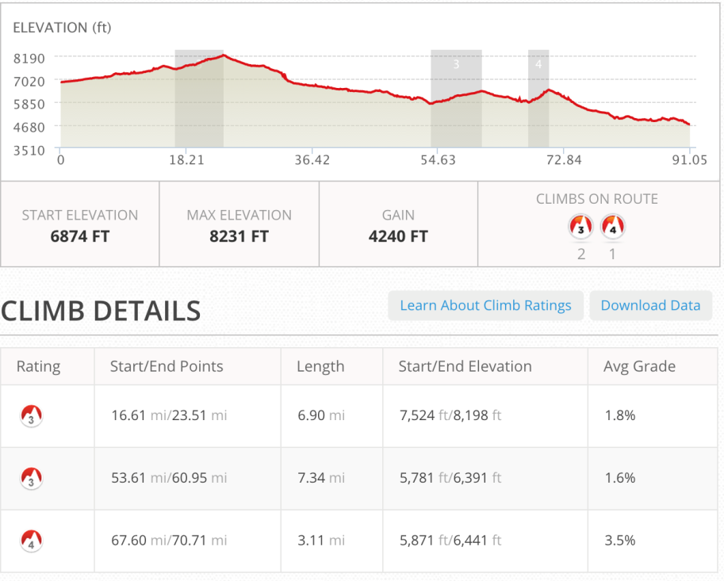
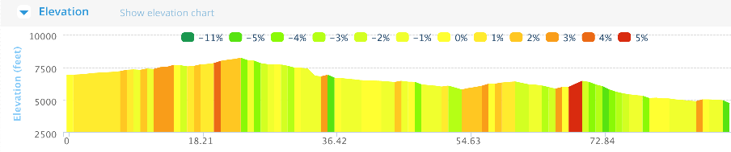
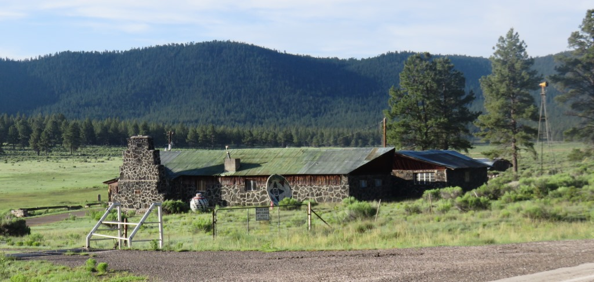
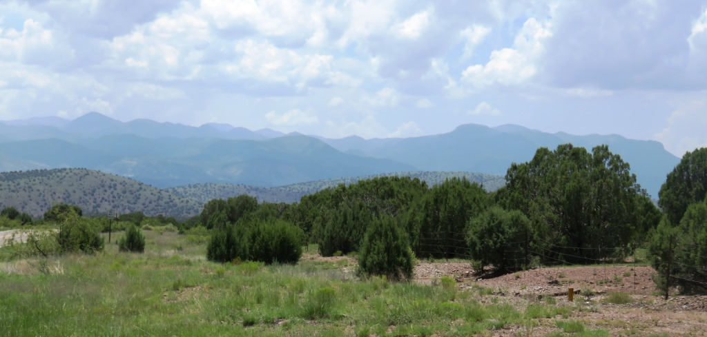
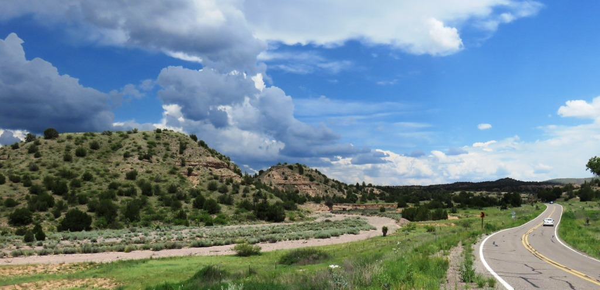
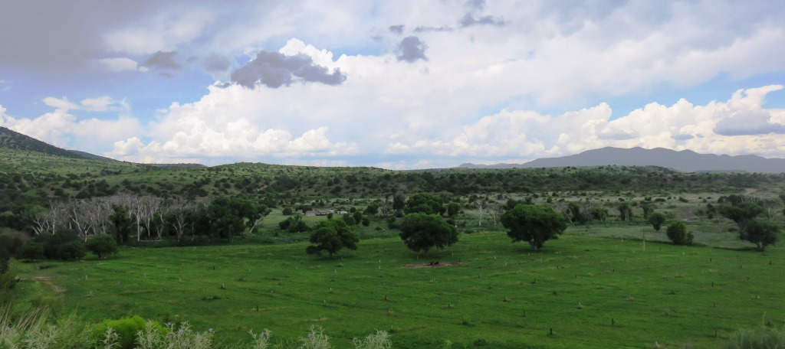
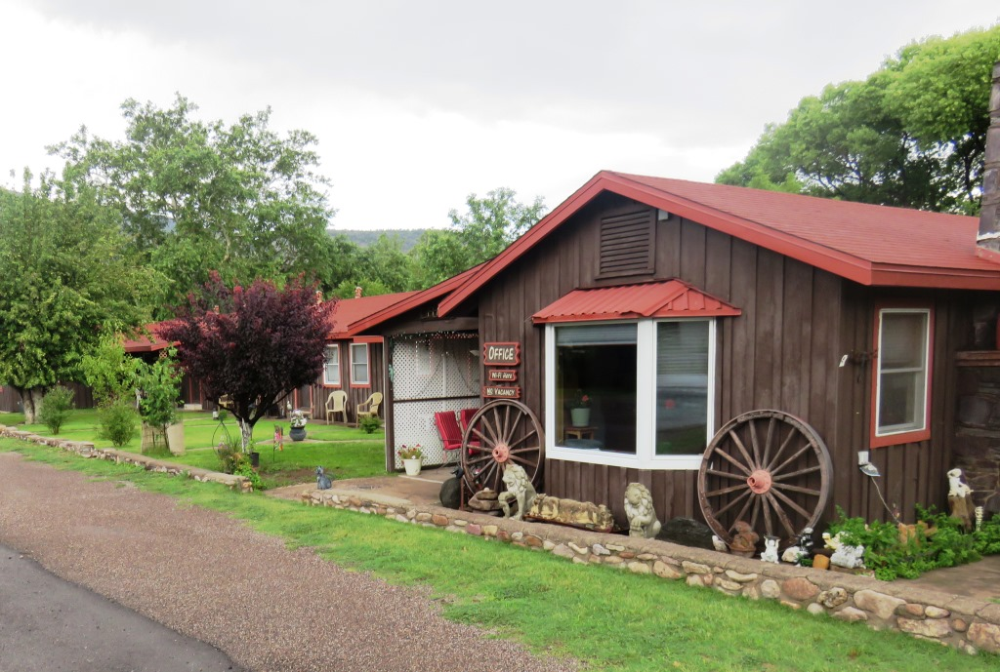

My original plan for this day was to go the 60+ miles to the Hidden Springs Inn which would have left Monday a 90 mile day into Silver City. I was concerned about the weather in the afternoon so I left before 6am. For the first time on the trip I had made a reservation in advance to stay at this inn.


Quamado to Reserve
The first real place to stop was in Reserve after 53 miles. The first 23 miles was a gradual climb up to 8,000 feet and then it was downhill into Reserve which was back down at 5,800 feet. There was a store and restaurant and I bought some snacks but decided to head up to the hotel which was about 7 miles away.

Nice house along the wayI arrived at the Hidden Springs Inn before noon but the wind from the south had already picked up. I went into The Adobe Cafe and Bakery which was part of the hotel and had a great smoothie. I almost couldn't finish it because of the brain freeze. I cancelled my reservation and decided to fight the wind another 30 miles and see what was in Glenwood, the next town south. All the people in the cafe assured me "it's downhill from here".

Gila National Forest and the CD off to the east. Gila National Forest and the CD off to the east.
Gila National Forest and the CD off to the east.

Heading south on US Route 180The first 7 miles from the Hiden Springs Inn was a nice downhill and then there was a three mile climb before I finally did have a nice downhill into Glenwood.

Last ridges before my "coast".Glenwood, NM
Glenwood had two or three motels and I stayed at the Whitewater Motelwhich was next to the Whitewater Creek which because of all the rain seemed to have some water in it.
I had a porch out front and after making a few phone calls sitting at the post office next door I got some ice for my knees and some food from the store down the street and spent the afternoon nice and dry. The rain really came down about 4 o'clock but let up in time for me to go to the Golden Girls Cafe down the street.

The Whitewater MotelGolden Girls Cafe was only open from 4pm to 7pm on Sundays. I had a nice beef brisket dinner and some pie for desert. Nice end to a very good day with only 60 miles to Silver City and then another 80+ miles to the Mexican Border.
Ain't no stopping me now
July 12 - 90 miles - Quamado to Glenwood, NM
See full screen map To go places and do things that I've never done before– that’s what living is all about.Text by Jim O'Brien . Photographs by Jim O'BrienTD on Flickr.